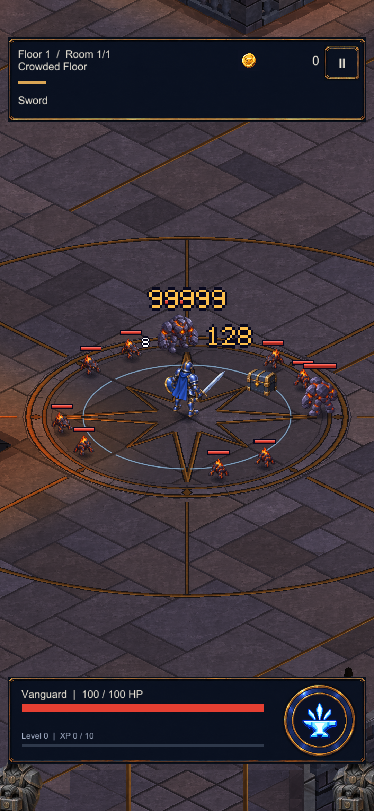

Original code-native 5×7 glyphs replace the 3×5 damage numerals. White normal hits, gold critical hits, one-pixel outline, one-pixel glyph spacing and the existing 2× critical scale are retained. Existing number pool and value handling are unchanged.
Actual Unity render with explicitly staged samples 8, 128 critical and capped 99999 critical. These are typography specimens through the game's pooled renderer, not damage inflicted in the pictured encounter.
